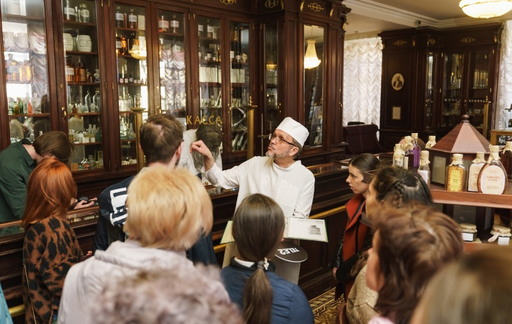
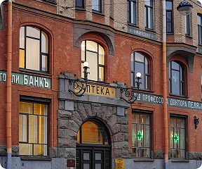
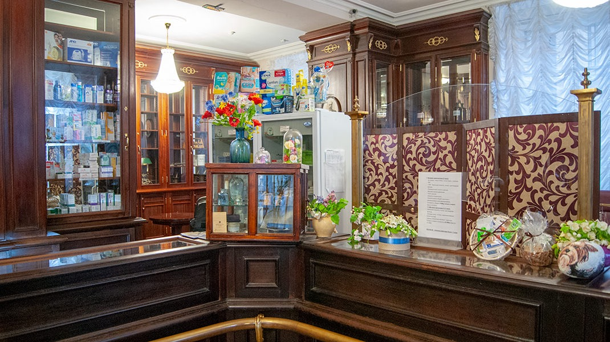
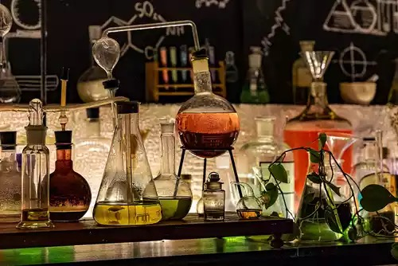

Аптека Пеля и башня Грифонов

Легенда
Немецкий аптекарь Вильгельм Пель, купивший это здание в 1848 году, на самом деле был потомственным алхимиком и магом, которого называли «петербургским Калиостро». В своей тайной лаборатории, расположенной в подвалах и высокой башне во дворе, он пытался создать философский камень и найти формулу перехода в параллельные миры.

Сами стены аптеки хранят следы его опытов, а внутри висело чучело крокодила — возможно, результат одного из неудачных экспериментов. Главными стражами аптеки являются мифические грифоны (крылатые львы с орлиными головами), которых Пель якобы вывел в подземельях. По ночам он выпускал их через башенную трубу полетать над Василеостровским районом.

Местные жители жаловались в полицию на громкий шум крыльев и крики чудовищ, мешающих спать. После визита полиции Пель сделал своих питомцев невидимыми, но до сих пор в полнолуние, если посветить фонарём в окна соседних домов, можно увидеть отражения грифонов.
Также на кирпичах башни нанесены цифры от 0 до 9. Существует легенда, что это «код счастья» или координаты иного измерения. Если провести диагонали между определёнными числами, можно открыть портал. Поговаривают, что именно здесь Дмитрий Менделеев — частый гость Пеля — увидел во сне свою Периодическую таблицу, вдохновившись алхимическими опытами друга.
Что было на самом деле
Здание было построено в 1760 году. Вильгельм Пель действительно купил аптеку в середине XIX века и превратил её в мощный фармацевтический комплекс с исследовательскими лабораториями. «Башня грифонов» — это не мистический портал, а обычная вытяжная труба для вентиляции химической лаборатории. Шум, пугавший соседей, был работой вентиляции и котельной.

Дмитрий Менделеев действительно был знаком с семьёй Пель и бывал в этой аптеке (как и многие другие учёные того времени), но свою таблицу он увидел во сне уже после работы над карточной системой, а не под влиянием «алхимии» Пеля. Цифры на башне появились не при Пеле, а в 1990-х годах — их нанёс художник Алексей Кострома, пытаясь создать арт-объект. История о жалобах на грифонов — удачный туристический миф (газетная заметка не найдена), а чучело крокодила было обычным украшением аптек XIX века, чтобы привлекать внимание покупателей. Сегодня в здании находится музей «Аптека Пеля», где можно увидеть подлинную лабораторию и интерьеры той эпохи.
← Назад к карте